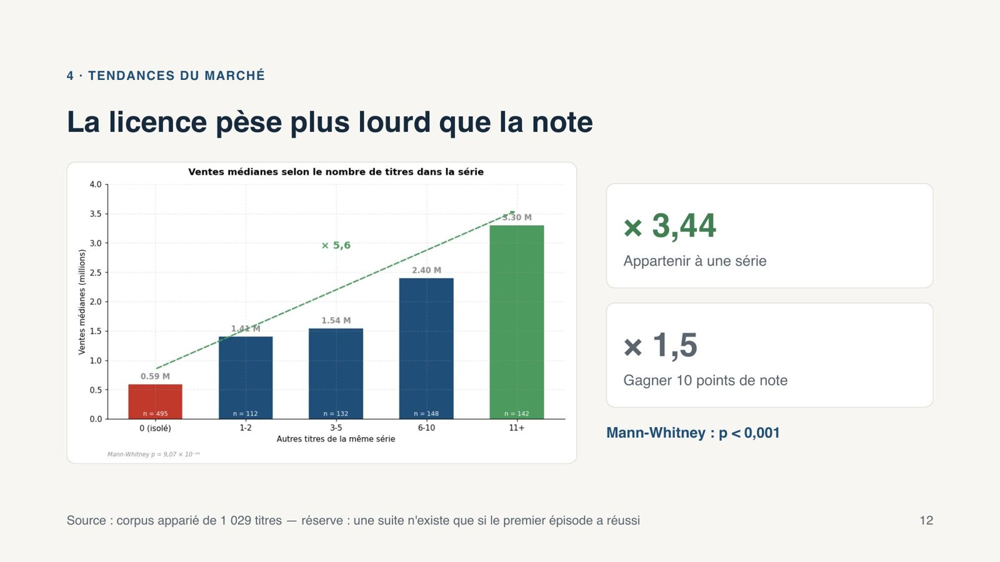
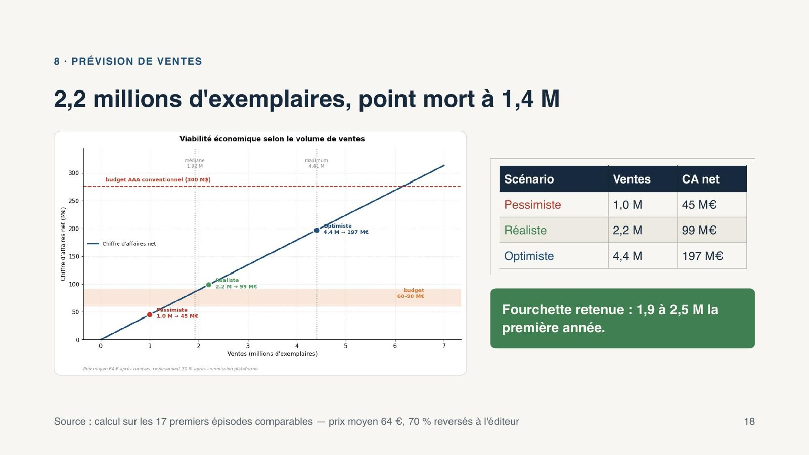

UOI Games, choisir le bon jeu pour un premier AAA
Projet 10 du parcours. Python, tests statistiques, PESTEL, SWOT, questionnaire en ligne.
Contexte et besoin métier
UOI Games veut lancer son premier jeu vidéo AAA, un pari long et coûteux pour un studio sans notoriété. La responsable du projet attendait une lecture des tendances du marché, le choix d’un segment de joueurs et une recommandation de jeu étayée par les données, avec une première estimation des ventes.
Données
Trois jeux de données fournis par le client, sur plus de 16 500 titres, les notes des joueurs et les ventes de consoles, que j’ai complétés par des sources de marché (Newzoo, Circana, résultats financiers de Sony et Nintendo) et par un questionnaire conçu pour l’occasion, auquel 47 personnes ont répondu.
Démarche
J’ai d’abord cadré l’environnement du marché avec un PESTEL et un SWOT, puis formulé cinq hypothèses sur les facteurs de succès d’un jeu, que j’ai testées en croisant les bases de ventes et les réponses au questionnaire. Les résultats ont guidé la construction du segment cible, puis le concept recommandé, avant une prévision de ventes fondée sur 17 premiers épisodes comparables.

Résultats et impact
Deux idées reçues sont tombées : le nombre de consoles vendues ne prédit pas les ventes de jeux, et la note compte bien moins que l’appartenance à une série, qui multiplie les ventes par 3,4. La recommandation porte sur un jeu d’action-aventure solo à composante shooter, pensé dès l’origine comme le premier épisode d’une trilogie, destiné aux joueurs occidentaux de 25 à 44 ans sur PlayStation et PC. Lancé à l’automne 2028, après GTA VI, avec un budget de 60 à 90 M€ au lieu des 300 habituels, il viserait 2,2 millions d’exemplaires la première année, pour un point mort à 1,4 million.

Limites et prochaines pistes
Le questionnaire repose sur un échantillon restreint et non représentatif, et les jeux comparables ont tous été édités par de grands acteurs. Une étude plus large auprès du segment cible et des tests sur un prototype permettraient de consolider la prévision.